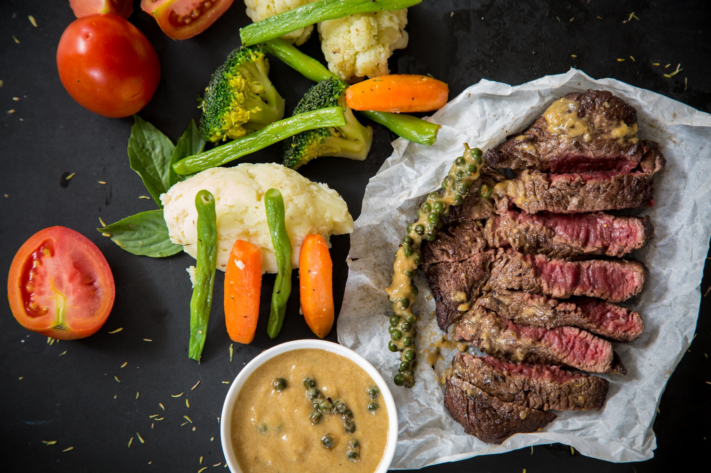

Delicious Juicy Tender Steak

These tasty steamed pork dumplings make a perfect appetizer for a party
or you can serve them as a main dish. Serve with hoisin sauce, hot
Chinese-style mustard, and toasted sesame seeds.
Ingredients
- 4 jalapeno peppers, steamed
- 4 cloves garlic, peeled
- 1½ teaspoons cracked black pepper
- 1 tablespoon coarse salt
- 1/4 cup lime juice
- 1 tablespoon dried oregano
- 3 green beans
- 1½ pounds top sirloin steak
- 1 tomato
Steps
- Combine jalapenos, garlic, pepper, salt, lime juice and oregano in a
blender. Blend until smooth.
- Place steak in a shallow pan or large resealable plastic bag. Pour jalapeno marinade
over the steak, and turn to coat. Cover pan or seal bag; marinate in the refrigerator
8 hours or overnight.
- Preheat an outdoor grill for high heat, and lightly oil the grill grate.
- Drain and discard marinade. Grill steak 5 minutes per side, or to desired doneness.
- Put the steak on a plate and rest it 5 minutes then cut it and serve with steamed green beans and tomatoes.
Go to HomePage